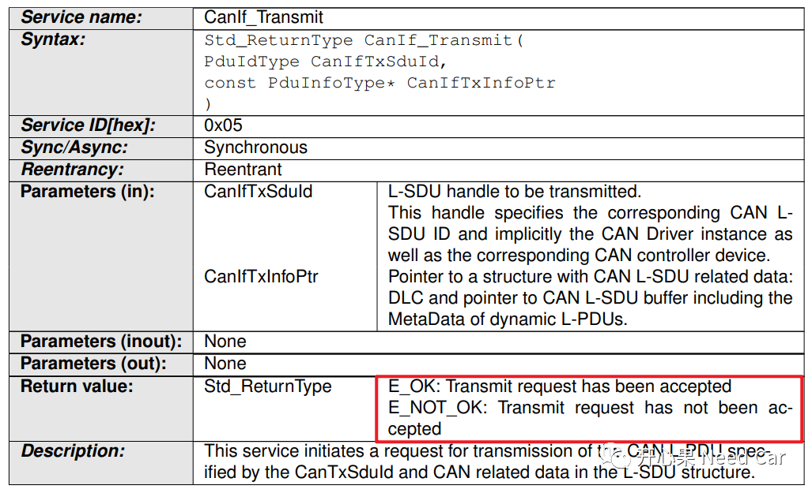
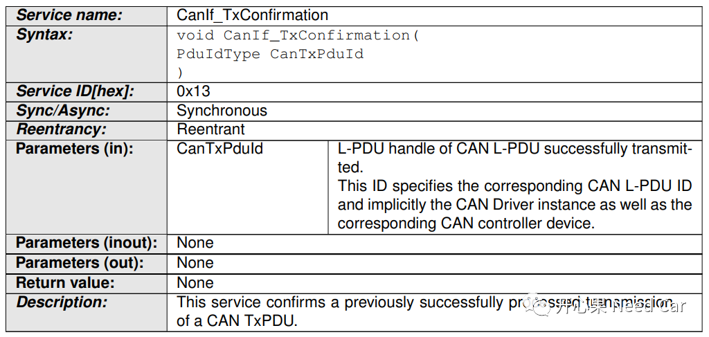
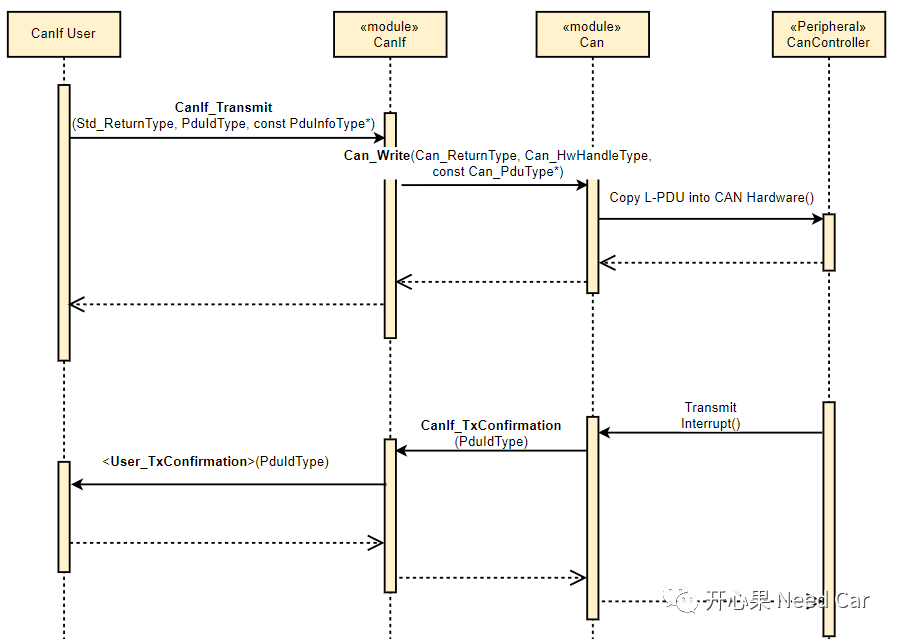

先给出问题答案：不是。
以CAN发送为例，当某帧报文需要发送的时候，调用的发送接口会有一个返回状态值，该值表明当前数据的发送请求状态。比如：CanIf_Transmit()接口会有一个Std_ReturnType类型的返回状态(E_OK、E_NOT_OK)。
E_OK：表明当前数据已经成功放入底层硬件缓存区中，发送请求成功，之后等待发送。
E_NOT_OK：表明当前数据未能成功放入底层硬件缓存区中，发送请求失败。
如果数据不能成功放入底层硬件缓存区中，也就意味着数据不能被发送到总线。不能成功放入底层硬件缓存区的原因有哪些呢？可能因为总线Busoff，也可能因为底层硬件缓存区已满。
CanIf_Transmit()函数原型如下所示：

程序中，上层需要获悉数据是否成功发送到总线上，以便于选择之后的执行动作。上层怎么知道数据是否发送到总线上了呢？显然，通过发送接口的返回值是不能知道数据是否成功发送到总线上，只能知道数据成功放入底层硬件缓存区与否。此时，就需要上层在底层注册一个回调函数，当放入底层缓存的数据成功发送到总线以后，可以通过该回调函数告知上层，该回调函数可以放在中断中，也可以放在main函数中（Polling方式通知上层数据发送结果）。
CanIf_TxConfirmation函数原型如下所示：

CanIf是CAN驱动层的上层，CanIf在CAN驱动层注册回调函数CanIf_TxConfirmation，当CanIf请求发送的数据成功发送到CAN总线以后，CAN驱动层通过此函数告知CanIf，CanIf请求发送的数据成功发送到CAN总线。
以此类推，CanIf上层模块的数据发送请求和发送状态，使用同样的数据处理方式。
以上可以知道，发送请求和发送确认是异步行为，发送请求和发送确认的时间不同。
注意：即使待发送数据已经成功放到底层硬件缓存区，如果发生Busoff，则硬件缓存区待发送数据被清除，数据无法发送到总线上，将不会发送确认。
以中断通知方式为例，数据发送请求和发送确认通知流程如下所示：

总结：发送接口的返回值表示请求发送的数据是否成功放入底层硬件缓存区，而发送确认则表示数据成功发送到总线与否。

参考资料
SIMPLE TITLE
AUTOSAR_SWS_CANInterface.pdf
往期精彩回顾